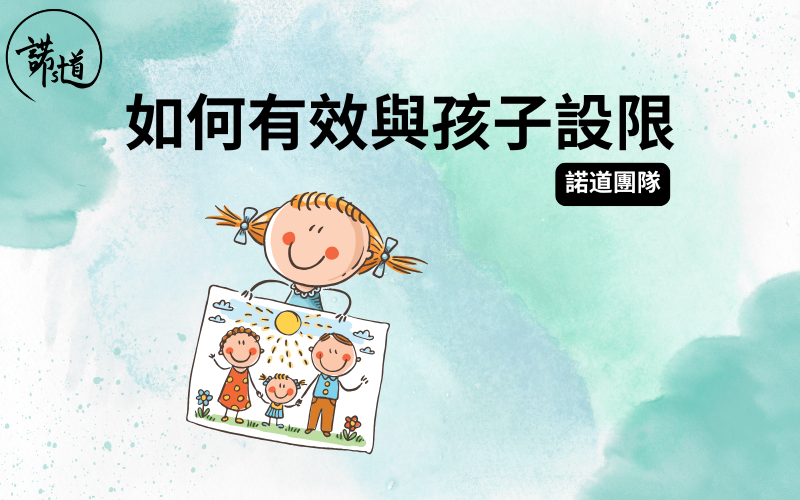

為人父母都會理解，當子女有足夠睡眠休息、吃了喜歡的零食、喝到甜甜的果汁，心情好、情緒穩定、乖乖聽話時，真像天使般可愛；但當疲累來襲、想擁有的玩具爸爸說不買了、想吃薯⽚但媽媽說要先吃午飯、想繼續看YOUTUBE但當天的電視時間夠了...得不到想要的東西引致的失落、失望、不開心、沮喪，一下子令情緒爆發，打人、踢腳、大叫，⼩可愛就變成⼩魔怪了！
這些時候通常照顧者的情緒會被牽動、底線會被觸及，引致的結果大多有兩個。第一：照顧者妥協，因為⼩朋友的大嗌大喊令父母怕怕，故此選擇快快滿足當下的欲望，令其停止哭鬧；第二：父母以同樣的憤怒忟憎情緒回應子女，令他不敢再要求想要的東西、不敢再發脾氣。
不能否認以上兩種方法處理子女的脾氣所帶來的好處，就是事情快快被處理。可是，下一次再遇到同樣情況，這些畫⾯只會重覆出現。那麼該如何有效與孩子設限？家長可參考兒童為本遊戲輔導當中一個技巧：ACT
第一步：承認孩子當下的情緒 ACKNOWLEDGE THE FEELINGS
意即容許他有失落、失望、不開心、沮喪等感受，同時傳達「有這些感覺是正常的」訊息。
建議說話：「媽媽見到你而家好嬲、唔開心係可以㗎」
、「好想食朱古力但係我唔俾，所以你唔鍾意、手手好想打一啲嘢」。
第二步： 設限 COMMUNICATE THE LIMIT
簡潔地讓孩子知道甚麼行為是不被接受的，這裡要留意，不被接受的是孩子的特定一個行為，你仍然是愛他接納他整個人的。
建議說話：「不過爸爸唔係俾你打㗎」、「但係玩具唔係用嚟掉㗎」、「腳腳唔係用嚟踢人㗎」、「口唔係用嚟大嗌」。
第三步：給予選擇替代行為 TARGET ALTERNATIVE BEHAVIOUR
只是停止不理想的行為例如打人、踢人並不足夠，重要的是ACT中最後一步，讓孩子以另一種可接受的方式作為情緒出口。
建議說話：「如果手手想打一啲嘢，可以打個枕頭，或者媽媽同你大力拍拍」、「你可以用口口嚟叫媽媽幫手，或者拎枝泡泡吹，吹啲嬲嬲出嚟」、「想掉嘢可以掉呢個⾖袋去圈入⾯，或者掉個波去桶度」。
總結
ACT理論簡單，實踐下來最困難的是不會你一說完以上三個步驟的說話，孩子就像變魔法般⽴即跟從你的教導、做出社交合宜的行為。要有效使用ACT，秘訣在於耐性，意即父母要有心理準備，當你進行第一步時，孩子就可能會因為被明白而更放心舒發情緒，更放聲大哭；而且孩子也是第一次聽到你用這個方式與他對話，難免需時適應及思考；再者，第三步涉及做選擇
，將選擇權交到孩子手上 (RETURN OF
RESPONSIBILITY)，讓他為⾃⼰做決定，同時承擔相應責任，這部分都需要慢慢學習，不會做一次ACT就成功。爸爸媽媽以同樣堅定、溫柔的語氣重覆三個步驟即可。
驟眼看來，ACT並不如⽂中初段提到的方法能快速處理孩子當下的問題行為，但我們相信，以一種接納、關愛、諒解、容許的態度回應，會為孩子在成長路上的情緒學習灌以正⾯的成長養分，引導孩子以恰當的方法表達需要及想法。
把這篇⽂章分享給身邊跟你同樣關心孩子成長的朋友，讓我們一起和孩子健康快樂地成長。
如有任何問題或需要幫忙，歡迎你跟諾道團隊聯絡，我們樂意為你提供協助！